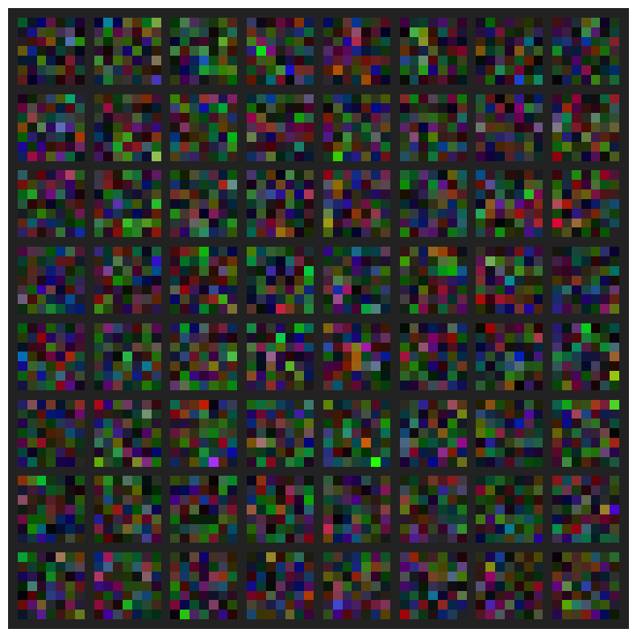
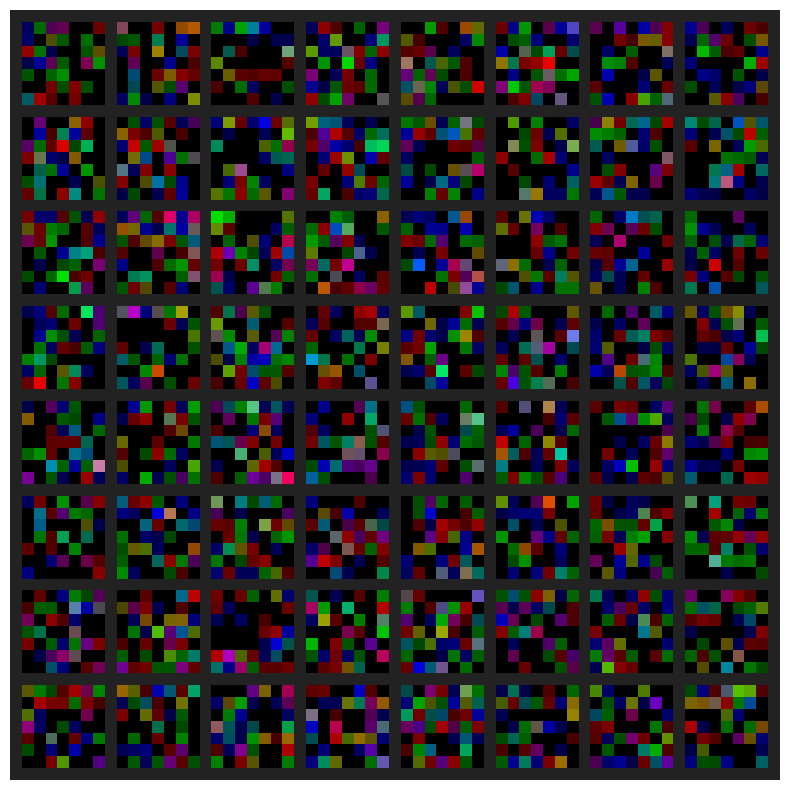
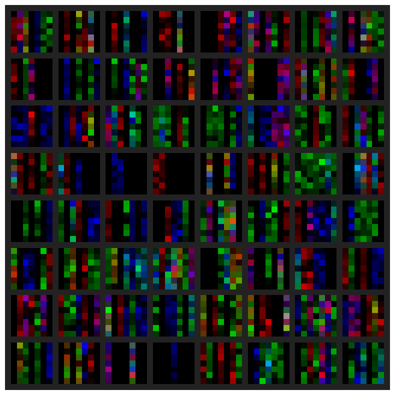

model = resnet18()Sparsifier
Make your neural network sparse with fastai
A sparse vector, as opposed to a dense one, is a vector which contains a lot of zeroes. When we speak about making a neural network sparse, we thus mean that the network’s weight are mostly zeroes.
With fasterai, you can do that thanks to the Sparsifier class.
Let’s start by creating a model
As you probably know, weights in a convolutional neural network have 4 dimensions ($ c_{out} c_{in} k_h k_w$)
model.conv1.weight.ndim4In the case of ResNet18, the dimension of the first layer weights is \(64 \times 3 \times 7 \times 7\). We thus can plot each of the \(64\) filter as a \(7 \times 7\) color image (because they contains \(3\) channels).
plot_kernels(model.conv1)
The Sparsifier class allows us to remove some (part of) the filters, that are considered to be less useful than others. This can be done by first creating an instance of the class, specifying:
- The
granularity, i.e. the part of filters that you want to remove. Typically, we usually remove weights, vectors, kernels or even complete filters. - The
context, i.e. if you want to consider each layer independently (local), or compare the parameters to remove across the whole network (global). - The
criteria, i.e. the way to assess the usefulness of a parameter. Common methods compare parameters using their magnitude, the lowest magnitude ones considered to be less useful.
User can pass a single layer to prune by using the Sparsifier.sparsify_layer method.
Found permutation search CUDA kernels [ASP][Info] permutation_search_kernels can be imported. —
Sparsifier.sparsify_layer
def sparsify_layer(
m:nn.Module, # The layer to sparsify
sparsity:float, # Target sparsity level (percentage)
round_to:Optional[int]=None, # Round to a multiple of this value
)->None:
Apply sparsification to a single layer
model = resnet18()
sparsifier = Sparsifier(model, 'filter', 'local', large_final)
sparsifier.sparsify_layer(model.conv1, 70)sparsifier.print_sparsity()
Sparsity Report:
--------------------------------------------------------------------------------
Layer Type Params Zeros Sparsity
--------------------------------------------------------------------------------
conv1 Conv2d 9,408 6,615 70.31%
layer1.0.conv1 Conv2d 36,864 0 0.00%
layer1.0.conv2 Conv2d 36,864 0 0.00%
layer1.1.conv1 Conv2d 36,864 0 0.00%
layer1.1.conv2 Conv2d 36,864 0 0.00%
layer2.0.conv1 Conv2d 73,728 0 0.00%
layer2.0.conv2 Conv2d 147,456 0 0.00%
layer2.0.downsample.0 Conv2d 8,192 0 0.00%
layer2.1.conv1 Conv2d 147,456 0 0.00%
layer2.1.conv2 Conv2d 147,456 0 0.00%
layer3.0.conv1 Conv2d 294,912 0 0.00%
layer3.0.conv2 Conv2d 589,824 0 0.00%
layer3.0.downsample.0 Conv2d 32,768 0 0.00%
layer3.1.conv1 Conv2d 589,824 0 0.00%
layer3.1.conv2 Conv2d 589,824 0 0.00%
layer4.0.conv1 Conv2d 1,179,648 0 0.00%
layer4.0.conv2 Conv2d 2,359,296 0 0.00%
layer4.0.downsample.0 Conv2d 131,072 0 0.00%
layer4.1.conv1 Conv2d 2,359,296 1 0.00%
layer4.1.conv2 Conv2d 2,359,296 0 0.00%
--------------------------------------------------------------------------------
Overall all 11,166,912 6,616 0.06%Most of the time, we may want to prune the whole model at once, using the Sparsifier.sparsify_model method, indicating the percentage of sparsity to you want to apply.
Sparsifier.sparsify_model
def sparsify_model(
sparsity:Union[float, dict], # Target sparsity level or per-layer dict
round_to:Optional[int]=None, # Round to a multiple of this value
)->None:
Apply sparsification to all matching layers in the model
There are several ways in which we can make that first layer sparse. You will find the most important below:
model = resnet18()
sparsifier = Sparsifier(model, 'weight', 'local', large_final)
sparsifier.sparsify_model(70)sparsifier.print_sparsity()
Sparsity Report:
--------------------------------------------------------------------------------
Layer Type Params Zeros Sparsity
--------------------------------------------------------------------------------
conv1 Conv2d 9,408 6,585 69.99%
layer1.0.conv1 Conv2d 36,864 25,805 70.00%
layer1.0.conv2 Conv2d 36,864 25,805 70.00%
layer1.1.conv1 Conv2d 36,864 25,805 70.00%
layer1.1.conv2 Conv2d 36,864 25,805 70.00%
layer2.0.conv1 Conv2d 73,728 51,609 70.00%
layer2.0.conv2 Conv2d 147,456 103,219 70.00%
layer2.0.downsample.0 Conv2d 8,192 5,734 70.00%
layer2.1.conv1 Conv2d 147,456 103,219 70.00%
layer2.1.conv2 Conv2d 147,456 103,219 70.00%
layer3.0.conv1 Conv2d 294,912 206,438 70.00%
layer3.0.conv2 Conv2d 589,824 412,877 70.00%
layer3.0.downsample.0 Conv2d 32,768 22,937 70.00%
layer3.1.conv1 Conv2d 589,824 412,877 70.00%
layer3.1.conv2 Conv2d 589,824 412,877 70.00%
layer4.0.conv1 Conv2d 1,179,648 825,753 70.00%
layer4.0.conv2 Conv2d 2,359,296 1,651,506 70.00%
layer4.0.downsample.0 Conv2d 131,072 91,750 70.00%
layer4.1.conv1 Conv2d 2,359,296 1,651,507 70.00%
layer4.1.conv2 Conv2d 2,359,296 1,651,507 70.00%
--------------------------------------------------------------------------------
Overall all 11,166,912 7,816,834 70.00%You now have a model that is \(70\%\) sparse !
Granularity
As we said earlier, the granularity defines the structure of parameter that you will remove.
In the example below, we removed weight from each convolutional filter, meaning that we now have sparse filters, as can be seen in the image below:
plot_kernels(model.conv1)
Another granularity is, for example, removing column vectors from the filters. To do so, just change the granularity parameter accordingly.
model = resnet18()
sparsifier = Sparsifier(model, 'column', 'local', large_final)
sparsifier.sparsify_layer(model.conv1, 70)plot_kernels(model.conv1)
For more information and examples about the pruning granularities, I suggest you to take a look at the corresponding section.
Context
The context defines where to look in the model, i.e. from where do we compare weight. The two basic contexts are: * local, i.e. we compare weight from each layer individually. This will lead to layers with similar levels of sparsity. * global, i.e. we compare weight from the whole model. This will lead to layers with different levels of sparsity
model = resnet18()
sparsifier = Sparsifier(model, 'weight', 'local', large_final)
sparsifier.sparsify_model(70)sparsifier.print_sparsity()
Sparsity Report:
--------------------------------------------------------------------------------
Layer Type Params Zeros Sparsity
--------------------------------------------------------------------------------
conv1 Conv2d 9,408 6,585 69.99%
layer1.0.conv1 Conv2d 36,864 25,805 70.00%
layer1.0.conv2 Conv2d 36,864 25,805 70.00%
layer1.1.conv1 Conv2d 36,864 25,805 70.00%
layer1.1.conv2 Conv2d 36,864 25,805 70.00%
layer2.0.conv1 Conv2d 73,728 51,609 70.00%
layer2.0.conv2 Conv2d 147,456 103,219 70.00%
layer2.0.downsample.0 Conv2d 8,192 5,734 70.00%
layer2.1.conv1 Conv2d 147,456 103,219 70.00%
layer2.1.conv2 Conv2d 147,456 103,219 70.00%
layer3.0.conv1 Conv2d 294,912 206,438 70.00%
layer3.0.conv2 Conv2d 589,824 412,877 70.00%
layer3.0.downsample.0 Conv2d 32,768 22,937 70.00%
layer3.1.conv1 Conv2d 589,824 412,877 70.00%
layer3.1.conv2 Conv2d 589,824 412,877 70.00%
layer4.0.conv1 Conv2d 1,179,648 825,753 70.00%
layer4.0.conv2 Conv2d 2,359,296 1,651,506 70.00%
layer4.0.downsample.0 Conv2d 131,072 91,750 70.00%
layer4.1.conv1 Conv2d 2,359,296 1,651,507 70.00%
layer4.1.conv2 Conv2d 2,359,296 1,651,507 70.00%
--------------------------------------------------------------------------------
Overall all 11,166,912 7,816,834 70.00%model = resnet18()
sparsifier = Sparsifier(model, 'weight', 'global', large_final)
sparsifier.sparsify_model(70)sparsifier.print_sparsity()
Sparsity Report:
--------------------------------------------------------------------------------
Layer Type Params Zeros Sparsity
--------------------------------------------------------------------------------
conv1 Conv2d 9,408 6,214 66.05%
layer1.0.conv1 Conv2d 36,864 11,786 31.97%
layer1.0.conv2 Conv2d 36,864 11,864 32.18%
layer1.1.conv1 Conv2d 36,864 11,806 32.03%
layer1.1.conv2 Conv2d 36,864 11,831 32.09%
layer2.0.conv1 Conv2d 73,728 32,757 44.43%
layer2.0.conv2 Conv2d 147,456 64,894 44.01%
layer2.0.downsample.0 Conv2d 8,192 1,234 15.06%
layer2.1.conv1 Conv2d 147,456 64,982 44.07%
layer2.1.conv2 Conv2d 147,456 65,301 44.29%
layer3.0.conv1 Conv2d 294,912 174,570 59.19%
layer3.0.conv2 Conv2d 589,824 349,497 59.25%
layer3.0.downsample.0 Conv2d 32,768 7,208 22.00%
layer3.1.conv1 Conv2d 589,824 349,981 59.34%
layer3.1.conv2 Conv2d 589,824 349,240 59.21%
layer4.0.conv1 Conv2d 1,179,648 894,898 75.86%
layer4.0.conv2 Conv2d 2,359,296 1,788,755 75.82%
layer4.0.downsample.0 Conv2d 131,072 39,958 30.49%
layer4.1.conv1 Conv2d 2,359,296 1,790,109 75.87%
layer4.1.conv2 Conv2d 2,359,296 1,789,953 75.87%
--------------------------------------------------------------------------------
Overall all 11,166,912 7,816,838 70.00%Criteria
The criteria defines how we select the parameters to remove. It is usually given by a scoring method. The most common one is the large_final, i.e. select parameters with the highest absolute value as they are supposed to contribute the most to the final results of the model.
model = resnet18()
sparsifier = Sparsifier(model, 'weight', 'global', large_final)
sparsifier.sparsify_model(70)sparsifier.print_sparsity()
Sparsity Report:
--------------------------------------------------------------------------------
Layer Type Params Zeros Sparsity
--------------------------------------------------------------------------------
conv1 Conv2d 9,408 6,325 67.23%
layer1.0.conv1 Conv2d 36,864 11,915 32.32%
layer1.0.conv2 Conv2d 36,864 11,815 32.05%
layer1.1.conv1 Conv2d 36,864 11,965 32.46%
layer1.1.conv2 Conv2d 36,864 11,990 32.52%
layer2.0.conv1 Conv2d 73,728 32,395 43.94%
layer2.0.conv2 Conv2d 147,456 65,275 44.27%
layer2.0.downsample.0 Conv2d 8,192 1,279 15.61%
layer2.1.conv1 Conv2d 147,456 64,888 44.00%
layer2.1.conv2 Conv2d 147,456 65,148 44.18%
layer3.0.conv1 Conv2d 294,912 174,785 59.27%
layer3.0.conv2 Conv2d 589,824 349,838 59.31%
layer3.0.downsample.0 Conv2d 32,768 7,069 21.57%
layer3.1.conv1 Conv2d 589,824 350,378 59.40%
layer3.1.conv2 Conv2d 589,824 349,638 59.28%
layer4.0.conv1 Conv2d 1,179,648 894,232 75.80%
layer4.0.conv2 Conv2d 2,359,296 1,789,714 75.86%
layer4.0.downsample.0 Conv2d 131,072 39,670 30.27%
layer4.1.conv1 Conv2d 2,359,296 1,789,491 75.85%
layer4.1.conv2 Conv2d 2,359,296 1,789,027 75.83%
--------------------------------------------------------------------------------
Overall all 11,166,912 7,816,837 70.00%model = resnet18()
sparsifier = Sparsifier(model, 'weight', 'global', small_final)
sparsifier.sparsify_model(70)sparsifier.print_sparsity()
Sparsity Report:
--------------------------------------------------------------------------------
Layer Type Params Zeros Sparsity
--------------------------------------------------------------------------------
conv1 Conv2d 9,408 9,407 99.99%
layer1.0.conv1 Conv2d 36,864 456 1.24%
layer1.0.conv2 Conv2d 36,864 327 0.89%
layer1.1.conv1 Conv2d 36,864 435 1.18%
layer1.1.conv2 Conv2d 36,864 905 2.45%
layer2.0.conv1 Conv2d 73,728 4,653 6.31%
layer2.0.conv2 Conv2d 147,456 6,854 4.65%
layer2.0.downsample.0 Conv2d 8,192 8 0.10%
layer2.1.conv1 Conv2d 147,456 6,538 4.43%
layer2.1.conv2 Conv2d 147,456 9,241 6.27%
layer3.0.conv1 Conv2d 294,912 83,006 28.15%
layer3.0.conv2 Conv2d 589,824 22,507 3.82%
layer3.0.downsample.0 Conv2d 32,768 11 0.03%
layer3.1.conv1 Conv2d 589,824 47,880 8.12%
layer3.1.conv2 Conv2d 589,824 105,624 17.91%
layer4.0.conv1 Conv2d 1,179,648 1,094,504 92.78%
layer4.0.conv2 Conv2d 2,359,296 2,143,119 90.84%
layer4.0.downsample.0 Conv2d 131,072 378 0.29%
layer4.1.conv1 Conv2d 2,359,296 1,921,688 81.45%
layer4.1.conv2 Conv2d 2,359,296 2,359,296 100.00%
--------------------------------------------------------------------------------
Overall all 11,166,912 7,816,837 70.00%For more information and examples about the pruning criteria, I suggest you to take a look at the corresponding section.
Remark
In some case, you may want to impose the remaining amount of parameters to be a multiple of 8, this can be done by passing the round_to parameter.
model = resnet18()
sparsifier = Sparsifier(model, 'filter', 'local', large_final)
sparsifier.sparsify_model(70, round_to=8)sparsifier.print_sparsity()
Sparsity Report:
--------------------------------------------------------------------------------
Layer Type Params Zeros Sparsity
--------------------------------------------------------------------------------
conv1 Conv2d 9,408 5,880 62.50%
layer1.0.conv1 Conv2d 36,864 23,040 62.50%
layer1.0.conv2 Conv2d 36,864 23,040 62.50%
layer1.1.conv1 Conv2d 36,864 23,040 62.50%
layer1.1.conv2 Conv2d 36,864 23,040 62.50%
layer2.0.conv1 Conv2d 73,728 50,688 68.75%
layer2.0.conv2 Conv2d 147,456 101,376 68.75%
layer2.0.downsample.0 Conv2d 8,192 5,632 68.75%
layer2.1.conv1 Conv2d 147,456 101,376 68.75%
layer2.1.conv2 Conv2d 147,456 101,376 68.75%
layer3.0.conv1 Conv2d 294,912 202,754 68.75%
layer3.0.conv2 Conv2d 589,824 405,504 68.75%
layer3.0.downsample.0 Conv2d 32,768 22,528 68.75%
layer3.1.conv1 Conv2d 589,824 405,504 68.75%
layer3.1.conv2 Conv2d 589,824 405,504 68.75%
layer4.0.conv1 Conv2d 1,179,648 811,008 68.75%
layer4.0.conv2 Conv2d 2,359,296 1,622,016 68.75%
layer4.0.downsample.0 Conv2d 131,072 90,112 68.75%
layer4.1.conv1 Conv2d 2,359,296 1,622,016 68.75%
layer4.1.conv2 Conv2d 2,359,296 1,622,016 68.75%
--------------------------------------------------------------------------------
Overall all 11,166,912 7,667,450 68.66%model = resnet18()
sparsifier = Sparsifier(model, 'filter', 'global', large_final)
sparsifier.sparsify_model(70, round_to=8)sparsifier.print_sparsity()
Sparsity Report:
--------------------------------------------------------------------------------
Layer Type Params Zeros Sparsity
--------------------------------------------------------------------------------
conv1 Conv2d 9,408 8,232 87.50%
layer1.0.conv1 Conv2d 36,864 0 0.00%
layer1.0.conv2 Conv2d 36,864 0 0.00%
layer1.1.conv1 Conv2d 36,864 0 0.00%
layer1.1.conv2 Conv2d 36,864 0 0.00%
layer2.0.conv1 Conv2d 73,728 69,120 93.75%
layer2.0.conv2 Conv2d 147,456 138,240 93.75%
layer2.0.downsample.0 Conv2d 8,192 0 0.00%
layer2.1.conv1 Conv2d 147,456 138,240 93.75%
layer2.1.conv2 Conv2d 147,456 138,240 93.75%
layer3.0.conv1 Conv2d 294,912 285,696 96.88%
layer3.0.conv2 Conv2d 589,824 571,392 96.88%
layer3.0.downsample.0 Conv2d 32,768 0 0.00%
layer3.1.conv1 Conv2d 589,824 571,392 96.88%
layer3.1.conv2 Conv2d 589,824 571,392 96.88%
layer4.0.conv1 Conv2d 1,179,648 1,161,216 98.44%
layer4.0.conv2 Conv2d 2,359,296 2,322,432 98.44%
layer4.0.downsample.0 Conv2d 131,072 0 0.00%
layer4.1.conv1 Conv2d 2,359,296 2,322,432 98.44%
layer4.1.conv2 Conv2d 2,359,296 2,285,568 96.88%
--------------------------------------------------------------------------------
Overall all 11,166,912 10,583,592 94.78%For more information about granularities at which you can operate, please check the related page.
Summary
| Tool | Purpose |
|---|---|
Sparsifier |
Core class for zeroing out weights |
sparsify_model() |
Apply sparsification to all matching layers |
sparsify_layer() |
Apply sparsification to a single layer |
print_sparsity() |
Report per-layer sparsity statistics |
large_final |
Criteria: keep weights with largest magnitude |
| Granularity options | weight, vector, kernel, filter |
| Context options | local (per-layer) vs global (network-wide) |
See Also
- Sparsifier API - Full Sparsifier API reference
- SparsifyCallback - Integrate sparsification into training
- Schedules - Control sparsification progression
- Criteria - All importance scoring methods
- Granularity - What gets sparsified at each level